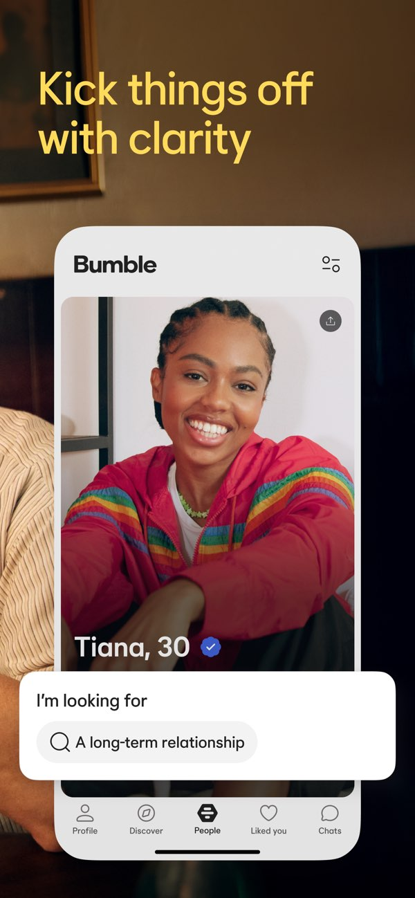

约会、交友、谈工作都装在一个滑卡里——Bumble 对比评测
在约会应用这个拥挤赛道上，Bumble 靠一套反直觉的规则和三张模式牌站稳了脚跟。它到底解决了什么老问题，又在哪些地方给你添了新麻烦？
约会应用这个赛道从来不缺新面孔，但真正能把「规则」做成差异化护城河的，数来数去也就那么几家。Bumble 是其中最特别的一个——它既不是靠算法匹配赢的，也不是靠内容社区拉留存的，它从第一天起就在改「约会这件事里谁先开口」这条底层规则，然后一路把交友、职场社交也塞进了同一个滑卡界面里。它的官网上有一份写得很坦诚的产品沿革，从规则到三模式的演变都讲得明白。
如果你同时用过 Tinder、Hinge 和 Bumble，大概能感觉到那个微妙的差别：前两者让你在「右滑就是机会」的狂欢里越陷越深，Bumble 则是在每一次配对完成后给你和对方各递了一个倒计时器——女性（异性配对场景下）必须在 24 小时内先开口，否则配对直接失效。这条规则简单得不能再简单，但它撬动的东西太多了：骚扰消息的减少、男性右滑的收敛、女性在应用里的安全感……以及，配对过期带来的微妙焦虑。
定位：三模式的野心 vs 约会应用的惯性
同类工具大多在「一个场景里做深」上死磕——要么纯约会，要么纯交友，职业社交那是 LinkedIn 的地盘。Bumble 的野心从 2016 年就暴露了：Date、BFF、Bizz 三种模式共用同一个应用、同一套滑卡交互、但各自独立档案。这条路线在当时看简直是自找麻烦——用户画像完全不同，产品诉求也不重叠，你让一个找对象的人顺手就划起了职业档案，逻辑上说不通。
但它撑下来了，而且三条线都没废掉。现在回头看，这个决策的聪明之处在于：用户其实不会把自己切割成「约会态」「交友态」「工作态」。刚搬到一个新城市的人，可能同时需要对象、需要同好朋友、需要认识几个本地的行业人；自由职业者刷着刷着，可能突然想看看这个匹配的人有没有合作的可能。三模式给的不是三个独立应用，而是同一个身份在不同场景下的平滑切换。

当然，三模式也带来了它独有的取舍：档案隔离意味着你要在三个模式里分别填写资料，上传不同侧重的照片，维护成本比单场景应用高。好消息是，暂时不开的模式不会主动打扰你——你可以只开 Date 和 BFF，把 Bizz 当作备用；坏消息是，如果你真的想把三个都用到极致，档案维护这件事本身就是一项持续投入。
差异化一：女性先开口，到底改变了什么
这条规则被说烂了，但真正体验过的人才能说出它的分量。在传统约会应用里，男性右滑的数量通常是女性的几倍甚至几十倍，大量未读消息和低质量开场白让女性的「筛选成本」高得离谱——她们需要的不是更多配对，而是更少的噪音。
Bumble 的解决方案是把「开场白的权利 + 24 小时倒计时」打包交给了女性。这带来了三个直接变化：
第一，男性右滑更收敛了。 当你知道右滑之后自己说不了话、只能等对方决定时，那种「见人就滑」的冲动会自动减弱。用户行为数据里，Bumble 男性用户的右滑转化率（右滑后收到回复的比例）普遍高于同类应用——这不是算法更准，而是双方都在更认真地做选择。
第二，开场质量明显上升。 再也没有「hey」「hi」「你好美女」这种批量复制粘贴的开场白了——因为开口的一方是有选择权的那一方，她们没动力去浪费自己的时间。
第三，过期机制制造了一种微妙的紧迫感。 配对 24 小时不说话就消失，听起来很残忍，但它确实在逼着你「现在就做决定」，而不是把匹配列表当成永远不会过期的收藏夹。当然，代价就是：一个犹豫就可能错过本来不错的人。
差异化二：照片验证，门槛最低的可信度信号
约会应用里假冒照片、冒充他人的问题是公开的顽疾。同类工具的解决路径通常是「举报 + 算法」，Bumble 则加了一层主动的照片验证：让你模仿一个系统随机生成的姿势自拍，和档案照片比对，通过后给一个蓝色对勾。
这个机制的精妙之处在于成本极低、信号极强。你只需要 30 秒、一张前置摄像头自拍，就能拿到一个无法伪造的可信度标记。筛选里有「只看已验证档案」选项，女性在决定是否右滑时会更愿意给带蓝勾的档案一个机会。更重要的是，验证过的人被误伤举报后申诉也更快——这在「照片举报」是高频事件的场景里不是小事。
具体的验证步骤、各市场的差异以及 ID 验证和照片验证的区别，bumble文档里有更详细的说明。验证失败的常见原因其实很简单：姿势没摆对、光线暗、或者档案第一张照片和本人差距太大。先把这些基础问题解决了再去提更高阶的可信度策略，远比纠结要不要做 ID 验证来得实在。
差异化三：订阅档位的透明性——它不想让你在付费上踩坑
Bumble 的订阅分三档：免费、Premium、Premium+。和很多同类应用靠隐藏权益、模糊额度来诱导升级不同，它的每一档权益、每周额度、差价都列得清清楚楚。Premium+ 比 Premium 多出来的三样东西——双倍 SuperSwipe、每周两条配对前纸条、档案洞察——每一样都在告诉你：顶配是给重度用户准备的，轻度用户买了也是浪费。
档案洞察是 Premium+ 独有的数据反馈：它会告诉你哪张照片停留率高、档案的哪个部分最薄弱。对于真的想系统优化自己档案的人来说，这是订阅金字塔里唯一的「闭环」权益——但前提是你真的会用两个月以上，而不是尝鲜就弃。
这条产品线还有一个容易忽略的优点：独立购买的工具（Spotlight、旅行模式）和订阅权益分得很清楚。Spotlight 是 30 分钟置顶曝光，旅行模式是让你的档案在异地城市显示——这些都是按次或按时长卖的，不会逼你先订一个月会员才能用。相比之下，不少同类应用把所有东西都塞进订阅，让只想偶尔用一个功能的人被迫为一堆用不上的权益买单。如果你打算先试试看能不能适应这套规则，下载页面的指引写得很清楚，装好就能上手。
它的代价：为什么不是所有人都该用 Bumble
说了这么多优点，Bumble 有三个明确的代价，是我必须提醒你的：
第一，男性用户的「被动感」是真实存在的。 如果你是那种喜欢主动出击、享受大量回复的男性用户，Bumble 会让你觉得有力无处使——你右滑了，然后就是等。当然，SuperSwipe 可以让你在对方滑卡时就高亮显示，但本质上还是在「增加被选中的概率」，而不是「主动发起对话」。
第二，三模式的产品线本身还在演变中。 BFF 模式经历过拆成独立应用、又合并回主应用的折腾，不同市场的形态还不一样。如果你只想要一个稳定的、形态永远不变的产品，这种反复会让你觉得不可靠。
第三，订阅在部分市场的定价并不便宜。 Premium+ 的价差显著高于 Premium，而那些增量权益只有重度用户能用完。轻度用户如果没算清楚就买，大概率会在每周额度刷新时看着一堆没用到的功能叹气。
选购结论：什么样的人选 Bumble，什么样的人该去别处
如果你符合以下任何一条，Bumble 大概率是比同类工具更适合你的选择：
- 厌倦了在约会应用里被大量低质量消息轰炸，想要更干净的筛选环境；
- 刚到新城市，同时需要找对象、找朋友、找行业人脉；
- 喜欢「规则明确、每一步都有因果」的产品设计，不喜欢被算法推着走。
如果你更看重以下几点，可能该去试试别的：
- 享受大量匹配带来的快感，不在乎消息池的噪音；
- 只想要纯粹的约会场景，不想在交友或职业社交上分心；
- 预算敏感，不想在订阅上做选择。
最后说句明确的：Bumble 不是约会应用里的万能药——它的规则本身就是一种筛选器，把那些接受「对自己和对方都更认真」的用户拉到了一起。如果你觉得「右滑就是机会，左滑就是浪费」，那它不适合你；但如果你厌倦了在海量匹配里消耗自己，Bumble 的规则会让你重新感觉到：每一次配对、每一次开口，都是有分量的。本文参考的资料在GitHub、Gitee、GitCode三个仓库里都能找到，方便不同网络环境下查阅。